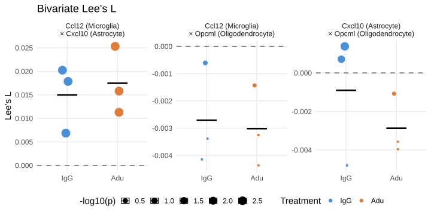

Code
source("R/setup.R")
library(spdep)
data <- load_slides_and_distances("full")
slide1 <- data$slide1
slide2 <- data$slide2
## Identify cell-types of interest
ct_astro <- "Astrocyte"
ct_oligo <- "Oligodendrocyte"
ct_micro <- "Microglia"Lee’s L per sample (brain) for treatment comparison — kNN(15) spatial weights
March 24, 2026
The three-layer glial response model proposes a spatial relay: microglia activation (Layer 1) drives astrocyte amplification (Layer 2), which in turn triggers oligodendrocyte remodeling (Layer 3).
If this relay is spatially structured rather than three independent regional responses, then activated microglia and reactive astrocytes should be spatially co-located: where one finds a microglial Ccl12 hotspot, one should also find a Cxcl10-expressing astrocyte hotspot nearby.
Lee’s L statistic is the bivariate generalisation of Moran’s I: it quantifies whether two spatial variables are jointly clustered. We use it to test the following pairs:
| Pair | Gene X | Cell type X | Gene Y | Cell type Y | Hypothesis |
|---|---|---|---|---|---|
| 1 | Ccl12 | Microglia | Cxcl10 | Astrocytes | Layer 1 → Layer 2 co-activation |
| 2 | Cxcl10 | Astrocytes | Opcml | Oligodendrocytes | Layer 2 → Layer 3 relay |
| 3 | Ccl12 | Microglia | Opcml | Oligodendrocytes | Long-range Layer 1 → Layer 3 |
For each pair we create two per-cell expression vectors: the gene’s raw count if the cell belongs to the relevant cell type, zero otherwise. Lee’s L of these two vectors tests whether the spatial patterns are concordant (L > 0) or discordant (L < 0) beyond what is expected by chance. Significance is assessed by Monte Carlo permutation (n = 499 shuffles) while keeping cell coordinates fixed.
Each gene was chosen as the strongest spatially-validated marker for its layer in this dataset, based on the upstream plaque-proximity and pseudobulk DE analyses:
Ccl12 (Microglia — Layer 1): the most statistically significant gene enriched in the proximity of parenchymal plaques in Aducanumab-treated brains (notebook 8, pseudobulk DESeq2 in plaque-proximal microglia). It also appears as the most cross-regionally consistent microglial signal in the DEG_consolidated regional model, significant in both hippocampus and white matter microglia.
Cxcl10 (Astrocytes — Layer 2): a marker of astrocyte subcluster 6, which is expanded in Aducanumab-treated brains relative to IgG controls. Cxcl10 encodes an interferon-γ-inducible chemokine (IP-10) produced by reactive astrocytes, linking microglial inflammatory signalling to an astrocyte activation state that is treatment-sensitive. This makes it the most informative astrocyte gene to test for spatial co-localization with microglial Ccl12.
Opcml (Oligodendrocytes — Layer 3): the most statistically significant gene enriched near parenchymal plaques upon Aducanumab treatment in the oligodendrocyte gene-distance correlation analysis (notebook 12). It is an established oligodendrocyte lineage marker and its plaque-proximal upregulation provides the strongest Layer 3 spatial signal in this dataset.
# Build a per-cell expression vector for gene G in cell type T:
# value = raw count if cell is of type T, 0 otherwise.
# cells_ordered must match the order of nodes in the spatial weight matrix (lw).
build_ct_expr_vector <- function(seurat_obj, gene, cell_types, cells_ordered = colnames(seurat_obj)) {
meta <- seurat_obj@meta.data
counts_mat <- LayerData(seurat_obj, assay = DefaultAssay(seurat_obj), layer = "counts")
n <- length(cells_ordered)
expr <- numeric(n)
if (gene %in% rownames(counts_mat)) {
in_mat <- cells_ordered %in% colnames(counts_mat)
expr[in_mat] <- as.numeric(counts_mat[gene, cells_ordered[in_mat]])
}
ct_cells <- rownames(meta)[meta$annotatedclusters %in% cell_types]
expr[!cells_ordered %in% ct_cells] <- 0
expr
}# Run Lee's L with Monte Carlo permutation for one gene pair.
run_lee <- function(seurat_obj, lw, gene_x, ct_x, gene_y, ct_y, nsim = 499) {
lw_cells <- attr(lw$neighbours, "region.id")
x <- build_ct_expr_vector(seurat_obj, gene_x, ct_x, lw_cells)
y <- build_ct_expr_vector(seurat_obj, gene_y, ct_y, lw_cells)
if (sum(x > 0) < 10 || sum(y > 0) < 10) {
return(tibble(
gene_x = gene_x, ct_x = paste(ct_x, collapse = "/"),
gene_y = gene_y, ct_y = paste(ct_y, collapse = "/"),
lee_L = NA_real_, pval = NA_real_,
n_x = sum(x > 0), n_y = sum(y > 0)
))
}
mc_res <- lee.mc(x, y, listw = lw, nsim = nsim, zero.policy = TRUE)
tibble(
gene_x = gene_x, ct_x = paste(ct_x, collapse = "/"),
gene_y = gene_y, ct_y = paste(ct_y, collapse = "/"),
lee_L = mc_res$statistic,
pval = mc_res$p.value,
n_x = sum(x > 0),
n_y = sum(y > 0)
)
}Each of the 6 brains is processed independently: subset the slide-level Seurat object to one sample’s cells, rebuild a kNN(15) spatial weight matrix from that sample’s cell coordinates, then run Lee’s L for the 3 relay pairs. This gives 18 rows (6 samples x 3 pairs) and enables direct Adu vs IgG comparison (n = 3 per group).
relay_pairs <- list(
list(gene_x = "Ccl12", ct_x = ct_micro, gene_y = "Cxcl10", ct_y = ct_astro),
list(gene_x = "Cxcl10", ct_x = ct_astro, gene_y = "Opcml", ct_y = ct_oligo),
list(gene_x = "Ccl12", ct_x = ct_micro, gene_y = "Opcml", ct_y = ct_oligo)
)
t0 <- Sys.time()
lee_results <- map(seq_len(nrow(sample_dict)), \(i) {
t_start <- Sys.time()
sid <- sample_dict$sample[i]
treatment <- sample_dict$treatment[i]
slide_num <- sample_dict$slide[i]
slide_obj <- if (slide_num == 1) slide1 else slide2
# Subset to this sample's cells
cells_i <- colnames(slide_obj)[slide_obj$sample_ID == sid]
sub_obj <- subset(slide_obj, cells = cells_i)
# Build per-sample kNN(15) spatial weight matrix
coords <- GetTissueCoordinates(sub_obj) |>
as.data.frame() |>
dplyr::select(x, y) |>
as.matrix()
nn <- nn2(coords, coords, k = 16)
nb_list <- map(seq_len(nrow(coords)), \(j) as.integer(nn$nn.idx[j, -1]))
class(nb_list) <- "nb"
attr(nb_list, "region.id") <- cells_i
lw_i <- nb2listw(nb_list, style = "W", zero.policy = TRUE)
res <- map(relay_pairs, \(pair) {
run_lee(sub_obj, lw_i, pair$gene_x, pair$ct_x, pair$gene_y, pair$ct_y) |>
mutate(sample_ID = sid, treatment = treatment)
}) |>
bind_rows()
elapsed <- as.numeric(difftime(Sys.time(), t_start, units = "mins"))
message(sprintf("[%d/%d] %s (%s) — %.1f min",
i, nrow(sample_dict), sid, treatment, elapsed))
res
}) |>
bind_rows()
message(sprintf("Done. Total: %.1f min", as.numeric(difftime(Sys.time(), t0, units = "mins"))))
# write_csv(lee_results, "spatial/lee_bivariate.csv")n_x and n_y are the number of cells with non-zero raw counts for gene X and gene Y, respectively, within their designated cell type. Because the expression vectors are zeroed out for all cells outside the target cell type, these counts reflect only the spatially active signal entering Lee’s L — they are the effective sample sizes for each variable. A very small n (< 10) causes the test to be skipped (reported as NA).
lee_results <- read_csv("spatial/lee_bivariate.csv")
lee_results |>
mutate(
pair = paste0(gene_x, " (", ct_x, ")\n× ", gene_y, " (", ct_y, ")"),
lee_L = round(lee_L, 4),
pval = formatC(pval, format = "f", digits = 3)
) |>
select(pair, sample_ID, treatment, lee_L, pval, n_x, n_y) |>
kbl(
caption = "Bivariate Lee's L — three-layer relay pairs (per sample)",
col.names = c("Pair", "Sample", "Treatment", "Lee's L", "p-value (MC)",
"n_x (expressing cells)", "n_y (expressing cells)")
) |>
kable_styling("striped", full_width = FALSE)| Pair | Sample | Treatment | Lee's L | p-value (MC) | n_x (expressing cells) | n_y (expressing cells) |
|---|---|---|---|---|---|---|
| Ccl12 (Microglia) × Cxcl10 (Astrocyte) | KK4_465 | IgG | 0.0069 | 0.002 | 225 | 272 |
| Cxcl10 (Astrocyte) × Opcml (Oligodendrocyte) | KK4_465 | IgG | 0.0014 | 0.004 | 272 | 5628 |
| Ccl12 (Microglia) × Opcml (Oligodendrocyte) | KK4_465 | IgG | -0.0006 | 0.418 | 225 | 5628 |
| Ccl12 (Microglia) × Cxcl10 (Astrocyte) | KK4_492 | Adu | 0.0158 | 0.002 | 701 | 476 |
| Cxcl10 (Astrocyte) × Opcml (Oligodendrocyte) | KK4_492 | Adu | -0.0040 | 0.998 | 476 | 6116 |
| Ccl12 (Microglia) × Opcml (Oligodendrocyte) | KK4_492 | Adu | -0.0044 | 0.998 | 701 | 6116 |
| Ccl12 (Microglia) × Cxcl10 (Astrocyte) | KK4_504 | IgG | 0.0202 | 0.002 | 361 | 466 |
| Cxcl10 (Astrocyte) × Opcml (Oligodendrocyte) | KK4_504 | IgG | 0.0007 | 0.020 | 466 | 5297 |
| Ccl12 (Microglia) × Opcml (Oligodendrocyte) | KK4_504 | IgG | -0.0041 | 0.998 | 361 | 5297 |
| Ccl12 (Microglia) × Cxcl10 (Astrocyte) | KK4_496 | IgG | 0.0179 | 0.002 | 411 | 320 |
| Cxcl10 (Astrocyte) × Opcml (Oligodendrocyte) | KK4_496 | IgG | -0.0048 | 0.998 | 320 | 5600 |
| Ccl12 (Microglia) × Opcml (Oligodendrocyte) | KK4_496 | IgG | -0.0034 | 0.998 | 411 | 5600 |
| Ccl12 (Microglia) × Cxcl10 (Astrocyte) | KK4_502 | Adu | 0.0113 | 0.002 | 371 | 383 |
| Cxcl10 (Astrocyte) × Opcml (Oligodendrocyte) | KK4_502 | Adu | -0.0036 | 0.998 | 383 | 5196 |
| Ccl12 (Microglia) × Opcml (Oligodendrocyte) | KK4_502 | Adu | -0.0033 | 0.994 | 371 | 5196 |
| Ccl12 (Microglia) × Cxcl10 (Astrocyte) | KK4_464 | Adu | 0.0253 | 0.002 | 720 | 532 |
| Cxcl10 (Astrocyte) × Opcml (Oligodendrocyte) | KK4_464 | Adu | -0.0011 | 0.592 | 532 | 5436 |
| Ccl12 (Microglia) × Opcml (Oligodendrocyte) | KK4_464 | Adu | -0.0014 | 0.620 | 720 | 5436 |
lee_plot <- lee_results |>
mutate(
pair = paste0(gene_x, " (", ct_x, ")\n× ", gene_y, " (", ct_y, ")"),
treatment = factor(treatment, levels = c("IgG", "Adu"))
)
ggplot(lee_plot, aes(x = treatment, y = lee_L, colour = treatment, size = -log10(pval))) +
geom_hline(yintercept = 0, linetype = "dashed", colour = "grey40") +
geom_jitter(width = 0.1, height = 0) +
stat_summary(fun = mean, geom = "crossbar", width = 0.4, linewidth = 0.5,
colour = "black") +
facet_wrap(~ pair, scales = "free_y") +
scale_colour_manual(values = c("IgG" = "#4A90D9", "Adu" = "#E07B39")) +
scale_size_continuous(name = "-log10(p)", range = c(1, 6)) +
labs(
title = "Bivariate Lee's L ",
x = NULL,
y = "Lee's L",
colour = "Treatment"
) +
theme_minimal(base_size = 15) +
theme(
strip.text = element_text(size = 12),
panel.grid.minor = element_blank(),
#panel.grid.major = element_blank(),
legend.position = "bottom"
)
Running Lee’s L per sample (brain) rather than per slide enables treatment-level comparison with n = 3 biological replicates per group.
A positive and significant Lee’s L for the Ccl12(microglia) × Cxcl10(astrocyte) pair indicates that regions of microglial Ccl12 activation are spatially concordant with Cxcl10-expressing astrocytes — direct spatial evidence for the Layer 1 → Layer 2 relay. A positive L for Cxcl10(astrocyte) × Opcml(oligodendrocyte) supports the Layer 2 → Layer 3 step. If both pairs show L > 0 but the Ccl12 × Opcml pair (skipping Layer 2) shows weaker L, this provides spatial evidence for a sequential relay rather than independent parallel responses.
If Aducanumab-treated brains show consistently higher Lee’s L than IgG controls, this would indicate that anti-amyloid treatment strengthens the spatial coupling between glial response layers — the relay is not merely present but treatment-modulated.